DESIGN PROPOSAL
전통 인쇄 산업 인프라와 현대적 창작 문화를 연결하는 보행 중심의 네트워크 활성화 구상을 제시합니다.
기존 인쇄산업의 생산기능이 유지되고 있음에도 불구하고 사람들이 직접 체험할 수 있는 거리 정체성이 부족한 상황이다. 이에 현재의 생산 인프라를 유지하면서 시민참여형 체험, 창작, 협업, 문화콘텐츠를 결합한 인쇄산업거리 모델을 제안한다.
CORE STRATEGY
제조공간을 시민과 연결하여 인쇄산업을 직접 경험할 수 있도록 구성한다. 엽서, 포스터 제작, 굿즈 커스터마이징 등 참여형 프로그램을 통해 산업공간이 시민의 일상과 만나는 접점을 만든다.
기존 인쇄업체와 디자이너, 브랜드, 스타트업 간 협업 시스템을 구축한다. 단순 수주관계를 넘어 공동제작, 기획이 가능한 구조를 만들어 인쇄산업의 새로운 수요를 창출한다.
인쇄 산업 정체성을 거리 디자인 요소로 시각화한다. 인쇄 모티프 바닥 디자인과 같은 공간 구성을 통해 성수동 인쇄문화거리만의 고유한 장소 정체성을 형성한다.
3D MODELING & CIRCULATION
스케치업 시뮬레이션을 통해 인쇄 가로의 전반적인 입체적 형태와 보행·체험 순환 동선 체계를 구체화했습니다.
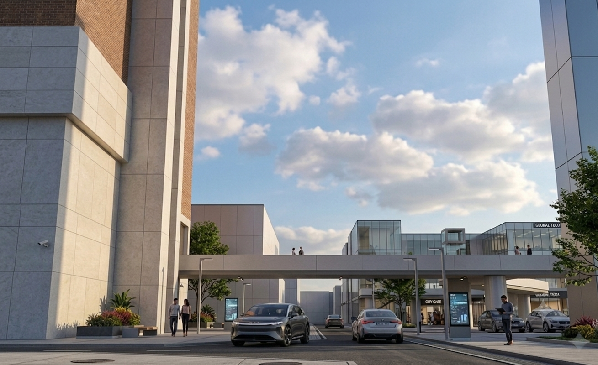
중앙 오픈스페이스와 건물을 입체적으로 연결하는 보행 브릿지 시스템 및 전반적인 단지 계획의 전체 뷰포트입니다.
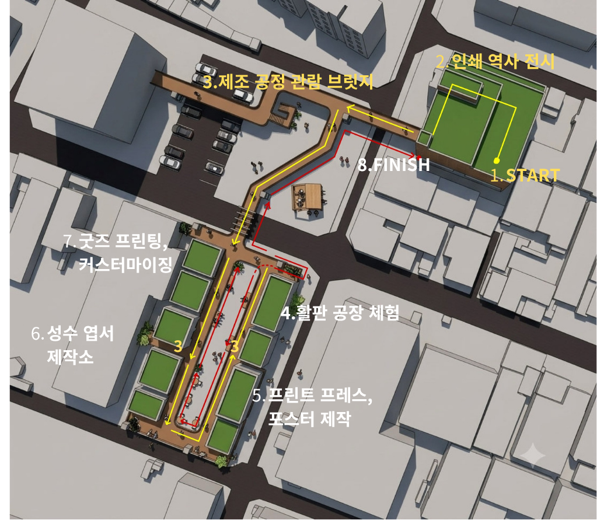
START 포인트에서 시작해 역사 전시, 관람 브릿지, 활판·포스터·굿즈 가공 체험공간을 거쳐 FINISH로 이어지는 순환형 보행 네트워크 경로입니다.
SPACE STRATEGY & PROGRAMS
4가지 핵심 거점 공간에 연령대별 특화 프로그램을 대입하여 가로의 이용 밀도와 공공성을 극대화합니다.
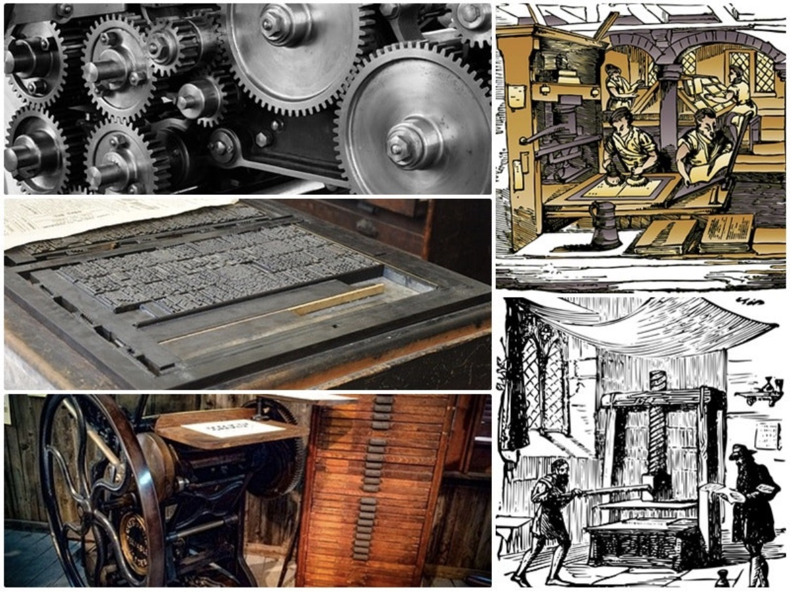
SPOT 01 / HISTORICAL
성수동 인쇄산업의 역사와 기술 변천을 전시한다. 활판, 오프셋부터 디지털 인쇄까지의 흐름을 시각화하여 방문자가 이 거리의 맥락을 이해할 수 있는 출발점이 된다.
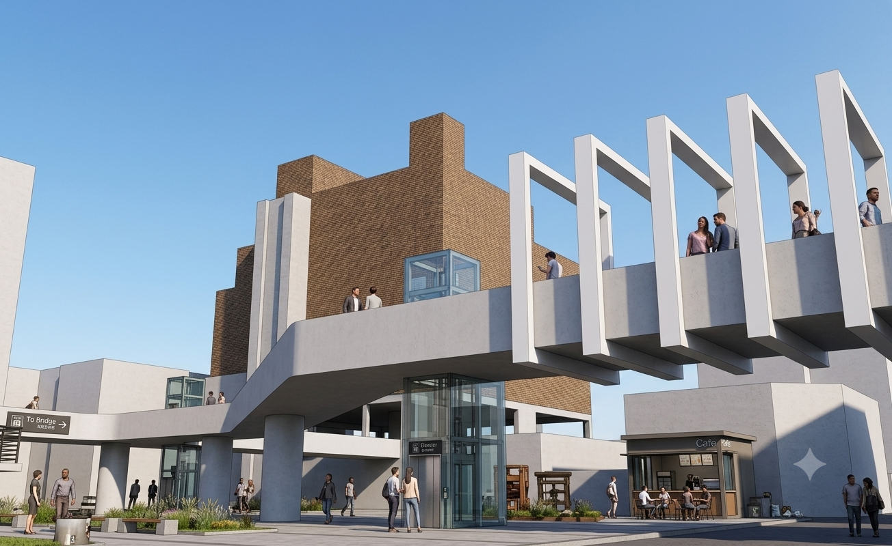
SPOT 02 / EXPERIENTIAL
엽서, 포스터 직접 제작, 굿즈 커스터마이징 프로그램을 운영한다. 기존 인쇄업체의 장비와 공간을 활용하여 시민이 실제 인쇄 공정을 경험할 수 있도록 구성하며, 생산 인프라를 유지하면서 새로운 방문 수요를 만드는 핵심 공간이다.
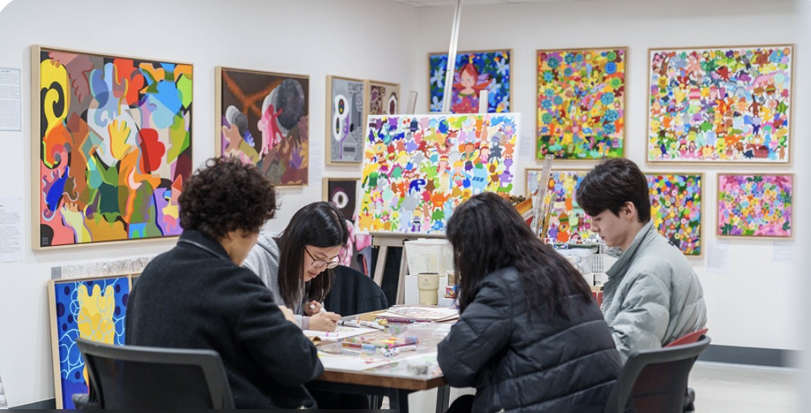
SPOT 03 / CO-WORKING
디자인 스튜디오, 팝업 전시 공간, 브랜드 협업 제작실, 공동 작업 공간으로 구성한다. 인쇄업체와 창작자가 같은 공간안에서 기획부터 제작까지 함께할 수 있는 구조를 만든다.
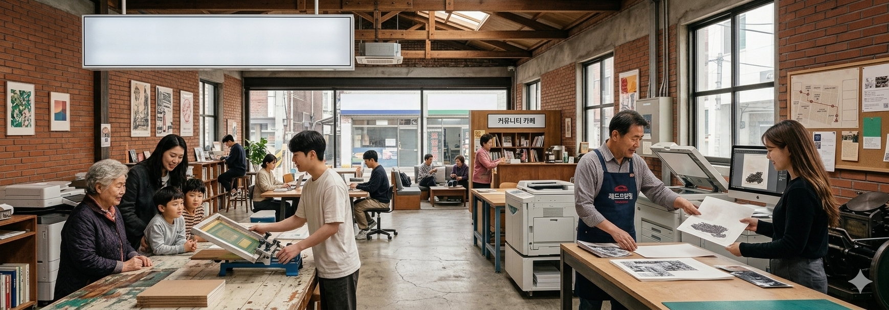
SPOT 04 / COMMUNITY
지역주민, 인쇄업 종사자, 창작자가 함께 사용하는 거점 공간으로 복합 커뮤니티 공간으로 운영한다.
STAMP TOUR PROGRAM
가로의 활성화와 대중적 장소 브랜딩을 위해 기획된 참여형 프로그램 시나리오입니다.
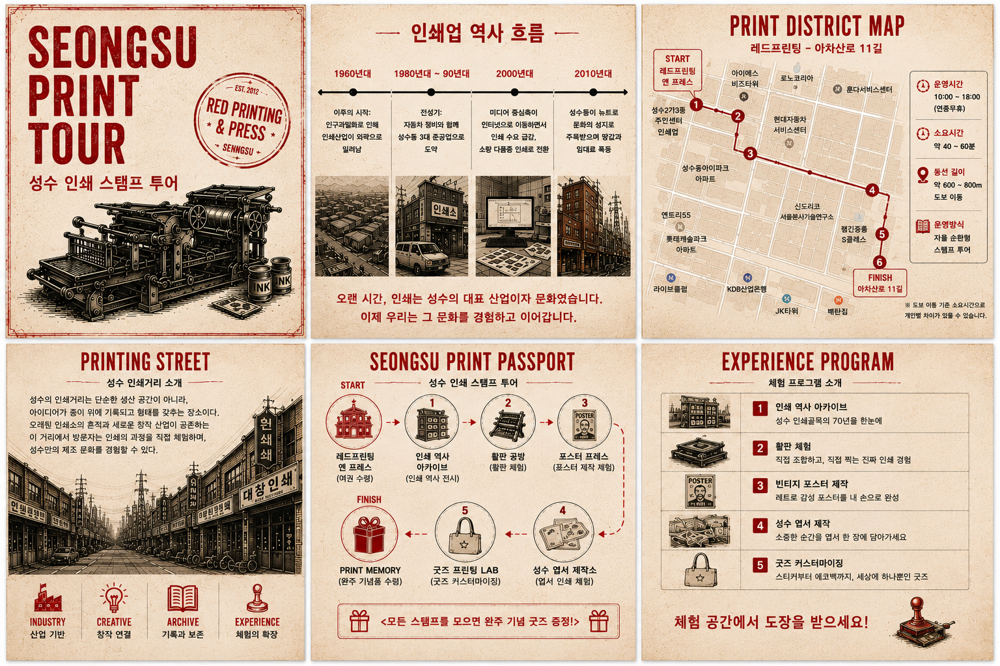
방문객은 마스터 앵커인 레드프린팅 공간 등에서 스탬프 투어용 인쇄 여권(Passport)을 수령하여 탐방을 시작합니다. 70년의 세월이 집적된 인쇄 역사 아카이브존관람을 시작으로, 활판 공방 체험, 빈티지 레트로 포스터 프레스 인쇄, 성수 엽서 제작소와 굿즈 프린팅 랩(Lab)까지 총 8단계의 마스터 동선을 자율 순환형태로 탐색하게 됩니다.
VIRTUAL IMMERSIVE VIEW
아래 가상 뷰어 엔진 창을 통해, 설계 도면상의 주요 거점을 클릭하여 실시간 1인칭 현장 전경 데이터를 조감해보세요.
EXPECTED EFFECTS
전통 인쇄산업의 생산 기반을 유지하면서 새로운 수요 창출 가능, 특히 레드 프린팅과 기존 인쇄업체를 중심으로 창작자 협업 네트워크가 크게 형성되며 전통 제조업의 지속가능성 높일 수 있음
유동 인구 증가와 지역 상권 활성화, 체험 프로그램과 굿즈 소비를 통해 경제 활성화 가능
성수동만의 산업문화 정체성 강화, 단순 제조업에서 벗어나 문화 콘텐츠로 전환, 정체성 강화
낙후된 제조 골목을 보행 중심 문화거리로 재편
INSPIRATION MOODBOARD
커스텀 인쇄 예시: 실제 커스텀 인쇄라기보다 사람들이 본인의 개성을 표현하는 인쇄물들을 이렇게 만든다 정도로 생각 (출처: 핀터레스트)
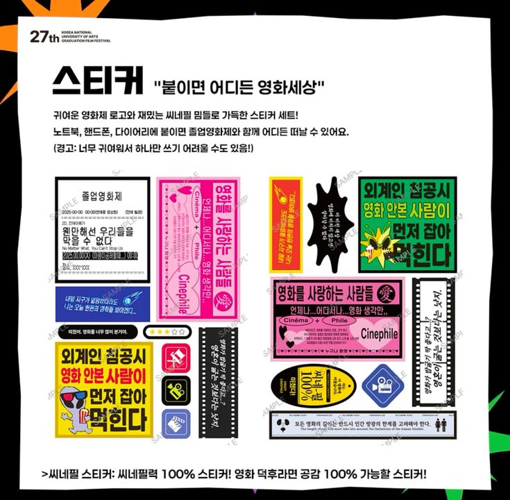
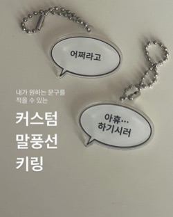
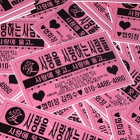
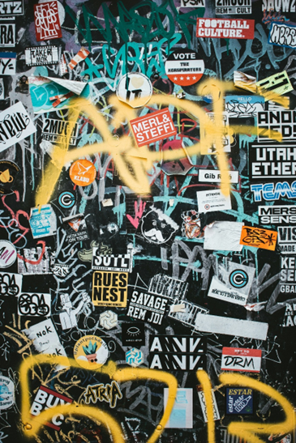